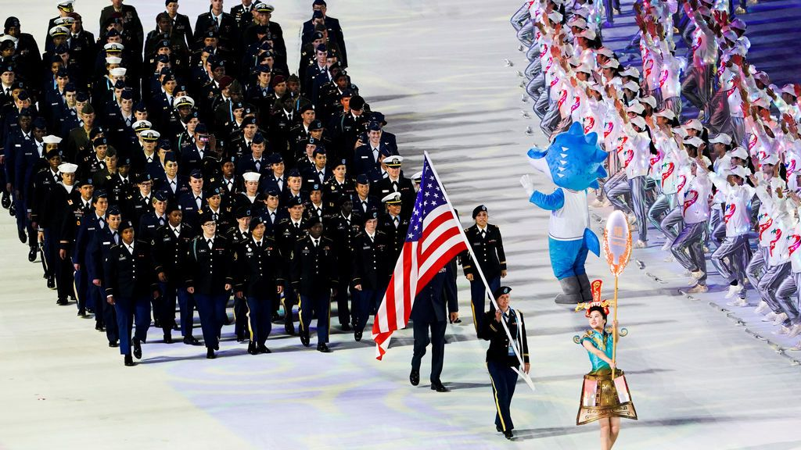

La teoría conspiratoria que señala a una ciclista estadounidense como el origen del coronavirus en China

Ni positivo por coronavirus ni síntomas que apunten a su presencia.A pesar de ello, Maatje Benassi, se encuentra en el centro de una teoría conspiratoria que la sitúa como el origen de la pandemia en Wuhan.El nombre de Benassi, reservista de las Fuerzas Armadas estadounidenses, lleva días sonando en YouTube, y los medios afines al Partido Comunista Chino se han sumado a esta oleada de acusaciones.
En el país asiático, los vídeos se suben a plataformas populares como WeChat, Weibo y Xigua Video y se traducen al chino.'Es como despertarse en una pesadilla constante', ha comentado Benassi a CNN Bussiness.Un ejemplo más de cómo la desinformación se extiende a la velocidad del Covid.'Quiero que todo el mundo deje de acosarme, porque esto es ciberacoso para mí y se ha ido de las manos', ha dicho.
¿Pero, que relación tiene Maatje, una madre de dos niños, con el Covid-19?De un primer vistazo más bien poco.Ella y su marido, Matt, trabajan para la Armada estadounidense.La primera trabaja como funcionaria de seguridad en Fort Belvoir (Virginia) y el segundo, exoficial del Ejército del Aire, tiene ahora un cargo civil en el Pentágono.
La conexión con China y en concreto, con Wuhan, se remonta al pasado octubre.Maatje viajó a la ciudad para participar en los Juegos Mundiales Militares, es decir, las Olimpiadas militares.La militar compitió en la prueba de ciclismo.De hecho, sufrió un accidente en la última, rompiéndose una costilla y sufriendo una conmoción, aunque pudo acabar la carrera.Nada que apunte a un foco de la pandemia.Lo que ella no sabía, es que este incidente daría pie a una situación mucho más desagradable.
George Webb, el 'youtuber' detrás del rumor
El principal 'promotor' de la idea de que Benassi es el 'paciente cero' de la pandemia es George Webb, según CNN.Este 'youtuber' de 59 años lleva años subiendo 'informaciones alternativas' a Internet.Y tampoco es un completo 'don nadie'.En la plataforma de vídeos lleva acumuladas más de 27 millones de visitas y casi 100.000 seguidores.
En 2017, Webb y otras 'teóricos de las conspiraciones' lanzaron falsos rumores sobre una bomba que llegaría en barco a Charleston (Carolina del Sur).Aunque nunca se materializó, la alarma generada llevó a cerrar partes del puerto.Por lo tanto, la credibilidad de Webb es, cuánto menos, cuestionable.
Volviendo al caso Benassi, Webb llegó a decir que el DJ italiano Benny Benassi tenía el Covid-19 y que formaba parte junto a la pareja de militares de una trama relacionada con el virus.Por supuesto, no existe parentesco entre ellos; Benassi es un apellido italiano relativamente común.Además, el artista también ha confirmado que no ha dado positivo.
Al margen de la veracidad de esta teoría, los rumores han puesto sus vidas patas arriba.Maatje y Matt denuncian que su domicilio ha sido publicado en Internet y que, antes de cerrar sus cuentas en redes, no paraban de llegarles mensajes de 'creyentes' de la conspiración.
El matrimonio ha tratado que YouTube elimine los vídeos, sin demasiado éxito.Además, contactaron con un abogado y la policía local, con pocos resultados en ambos casos.'Es muy difícil responsabilizar a Webb', ha dicho Matt Benassi a CNN.'La ley te dirá que no hay nada que pueda hacer al respecto porque hay libertad de expresión en este país'.Al final, ellos también han sido víctimas del coronavirus, aunque de la forma más inesperada.
Posted On: 2020-04-27T00:00:00
Content Date: 2020-04-27
Download Date: 2021-04-21
Document ID: L0C04AP0D